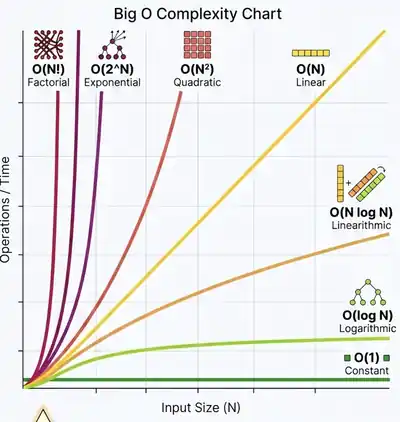

Big O описує, як змінюється кількість роботи або пам’яті, коли росте input. Нас цікавить не те, що код сьогодні виконався за 3 ms, а те, що станеться, коли N виросте у 100, 1 000 або 1 000 000 разів.
Time complexitySpace complexityMultiple inputsSwift examples

Твій reference chart із початкової нотатки — для запам’ятовування відносної форми growth classes.
01 · Mental model
Що саме вимірює Big O?
Не wall-clock time на конкретному Mac. Ми описуємо форму росту роботи відносно розміру input.
Input sizeN, M, number of nodes, characters, edges — те, що може рости.
Primitive workПорівняння, access, arithmetic, append — constant-time building blocks.
Growth classЗалишаємо те, що визначає поведінку при великих inputs.
02 · Growth explorer
Зміни N і подивись, як розʼїжджаються числа.
Це не benchmark, а умовна кількість операцій для однакового N.
N = 10
O(1)constant
O(log N)logarithmic
O(N)linear
O(N log N)linearithmic
O(N²)quadratic
O(N³)cubic
O(2ᴺ)exponential
O(N!)factorial
03 · Simplification
Drop constants. Drop dominated terms.
Зберігаємо asymptotic growth, а не точний operation count.
O(2N + 10)
O(N)
2 і 10 — constants. Коли N росте, вони не змінюють growth class.
04 · Multiple inputs
N і M — незалежні dimensions.
Sequential work додається. Nested work множиться.
for value in arrayA {
use(value)
}
for value in arrayB {
use(value)
}
O(N + M)Проходимо N елементів, потім M елементів. Робота додається.
05 · Time vs space
Один алгоритм має дві complexity.
Після time complexity запитай: що я додатково алокую залежно від input?
Set lookup
Один pass і зберігаємо seen values.
Time O(N) · Space O(N)
Nested loops
Порівнюємо багато пар без додаткової структури, що росте з N.
Time O(N²) · Space O(1)
Recursion
Call stack також може рости з depth.
Auxiliary space O(N)
06 · Nuance
Big O і “worst case” — не синоніми.
На інтервʼю “What’s the Big O?” часто означає worst-case complexity, але формально Big O — asymptotic upper bound.
FormalBig O задає upper bound для функції росту.
Interview shorthandЯкщо case не уточнений, часто очікують worst-case time complexity.